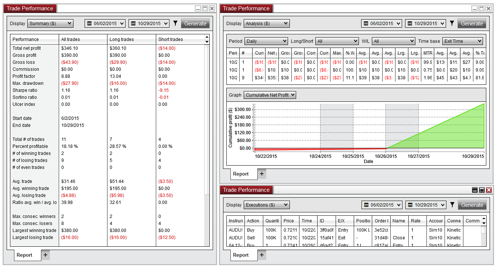

|
<< Click to Display Table of Contents >> What's New in NinjaTrader 8 |


|
What's New in NinjaTrader 8
|
<< Click to Display Table of Contents >> What's New in NinjaTrader 8 |
|
NinjaTrader 8 is our next generation trading platform redesigned using modern design techniques, allowing us to achieve greater performance and flexibility than ever before. Out of the box, NinjaTrader 8 incorporates over 500 changes and enhancements, largely collected from client feedback. The new version is ready to deliver the most advanced trading features for discretionary and automated traders of all levels trading stocks, futures, and forex
We have enjoyed incredible success with our pioneering strategy of offering a standards based (.NET) programming environment for indicators and strategies. The types of add-ons created by our vibrant developer community wildly surpassed our expectations and prompted us to re-think how the NinjaTrader platform could evolve. With NinjaTrader 8 we have created a true trading application development platform, allowing developers to build incredibly rich and integrated applications limited only by the imagination. We are confident that by providing formal support for deeper access into our core framework we will energize the community to build even better tools, adding significant value to our ecosystem (www.ninjatraderecosystem.com).
Although we have made large advancements with NinjaTrader 8, existing users will feel right at home as general usability has remained intact. We hope that you are as excited as we are about NinjaTrader 8. This document is a high level overview of the most significant changes in NinjaTrader 8.
Performance Enhancements •Upgraded to the latest Microsoft .NET 4.8 runtime environment •NinjaTrader 8 core and UI is now fully multi-threaded, which adds significant performance increases across the entire platform •Connectivity adapters now run in their own thread, which permits these events to run independent of the main application thread •Changed the way data is saved in the database resulting in significant performance enhancements •Replaced the Windows Forms UI with Windows Presentation Foundation (WPF), allowing us to take advantage of the latest UI concepts and models •Improved optimizations in terms of open workspaces resources for efficient CPU usage •Significant improvements on Strategy Optimization, resulting in 10x performance gains in our benchmarks •Added support for concurrent historical bar requests, greatly improving data load time compared to NinjaTrader 7 New Tabbed Interface We developed a new tabbed interface which is available from all trading and market analysis interfaces, optimizing the amount of screen real estate and the number of workspaces used to monitor and trade several markets at a time. Tabs can be dynamically named based on the Tab Content, such as Instrument Names, Accounts, ATM Strategies, and more, or with custom user-defined text. Existing tab content can also be duplicated into a new tab or into an entirely new window. Tabs can optionally be disabled on any individual window in order to maximize the display. New "Attach Orders to Indicators" Feature
We introduced a new hands-free trade management concept which allows you to attach manual orders placed via Chart Trader or the SuperDOM to indicators, so that the orders will automatically follow the indicator values as they change. Configure your favorite indicator, such as an EMA, and watch as your working orders are modified to follow the price of the indicator precisely on each tick, on price change, or on bar close. Available for both manual entry and exit orders as well as ATM Strategy Stop Loss and Profit Target orders. •No programming needed and defined completely through the user-interface •Configure a tick offset to track changes below or above the indicator value •Option to determine should the order modify to a better price only, or alternatively follow price change in either direction New Instrument Overlay Selector Instant instrument switching has been added to all trading and trade-analysis windows, significantly reducing the time it takes to switch an interface from one market to the next. This feature also includes a quick search button to easily navigate to the Instrument Window to look up instruments directly from the Instrument Overlay Selector. Simply start typing into any active window, and the Instrument Overlay Selector will automatically appear.
New Order Ticket Window We designed a new Order Ticket Window which replaces the Order Entry panel from the Control Center Orders Tab. This interface is designed to work with all supported order types and includes an option to close the Order Ticket window after order submission to help keep your workspace clean.
New Account Data Window Designed as a sister window to the Control Center, the new Account Data window works as a supplementary account data display feature giving you the ability to organize multiple tabs or windows for better account tracking and management. Tabs can be duplicated from the Control Center to a new Account Data window, which performs user defined filtering based on connected accounts. You can filter each window or tab independently, allowing multiple windows and tabs to show data for individual accounts, including Orders, Strategies, Executions, Positions and Account Balances.
Streamlined Instrument Management The methods used to manage instruments in NinjaTrader 8 have been renovated to evolve into a much more mature system. We’ve introduced the flexibility to pull instrument updates directly from our servers, ensuring users always have the latest broker and data feed symbol mapping, as well as any other exchange mandated changes, such as exchange hours and rollover dates. Any custom changes made by the user will not be impacted by server changes, which give users the flexibility to customize their own local instrument database, unless they optionally select to reset these settings to the latest server defaults.
The Instrument Manager Window and Instrument Editor were both modernized and simplified. •Auto search while typing, streamlining the search process •Added multi-select capability to allow for bulk editing and management of instruments •Multi-select available to interfaces which would support multiple instruments, such as the Market Analyzer which allows for faster selection of desired instruments
New Instrument Lists Window We designed a new menu for improved management of Instrument Lists. The multi-select feature allows you to dynamically add, edit, or remove multiple instruments to a list at once.
New Sharing Services We’ve added an application-wide interface to share NinjaTrader 8 content via various social-media outlets. Users can share custom messages, images, and other content of any window, chart, or grid using the Share interface accessible from the right-click menu in any window. Services for Twitter, Stocktwits, and Email come pre-built, and NinjaScript developers can build their own Service through NinjaScript.
New Sub-Second Granularity Market data time stamps are now processed and stored to the .NET ‘Tick’ which is the equivalent of 100 nanosecond resolution, allowing for much finer granularity when timing orders and working with price data.
New Historical Bid/Ask Data Per Tick Historical Bid/Ask data is now stored with each last trade tick data. For NinjaScript developers, you can now add data series with a Bid or Ask price type into your indicators or strategies, allowing you to access historical Bid/Ask data per tick.
Control Center We have redesigned the NinjaTrader 8 Control Center, which allows for quicker and more intuitive navigation, as well as a more efficient workflow. Connections and Workspaces menus have been moved directly to the Main Menu bar for easy access, and the Account Performance tab has been moved to its own dedicated Window (Trade Performance). In addition, the tabbed interface of the Control Center has been replicated across all trading and market-data windows, allowing for greater flexibility in comparing instruments or other data within a single window.
Enhanced Instrument Selector We updated our Instrument Selector to be standardized across all order-entry windows, and it now saves recently viewed instruments for quick access later. We also introduced a new feature to pin your favorite instruments to the quick-access list, replacing the former concept of a "default" instrument list. Likewise, we removed the requirement for the default instrument list, which means you can now access any custom list and your favorite instruments from any interface.
Application Options •Improved “Sounds” preferences to allow users to add their own custom sound files •Option for sounds to “Play consecutively,” to prevent synchronized sound triggers from overlapping each other •“Simulation Color” is now a global property, adding consistency to trading interfaces •Enhanced the “Auto Close” feature to enable users to specify a list of instruments on which to close positions at a specific time •Added “Confirm on Window/Tab Close” option, which will prevent the unintentional closing of windows •Added support for multiple languages. German, Spanish, and Russian will be included at launch, with the ability to add more languages in the future
Application Skins We've added the ability to apply different "skins" to customize the look of NinjaTrader 8. In addition to the five pre-built skins available in the platform, users can create their own custom skins for endless customizability of colors, margins, and other layout elements.
Light Skin
Dark Skin
Slate Gray Skin
Slate Light Skin
Slate Dark Skin
New Trading Hours Formerly named the “Session Manager”, our new Trading Hours window was designed for easier management of the templates used for charting, indicator calculations, real-time strategy execution, and strategy backtesting periods. Each session now has an “EOD” (End of Day) option to support multiple trading session definitions within a single day. We also added Holiday support to handle various scheduled breaks in exchange hours (Early Close, Late Open, or Full Day Holiday). Sessions and Holidays can now be downloaded and updated from NinjaTrader servers, providing the ability for exchange mandated changes to be pushed to all users, rather than needing to reconfigure these updates individually.
Changes to Managing Workspaces The Workspaces menu has been integrated directly into Control Center toolbar for faster switching and workspace management. Inactive workspaces are visible from the Workspaces menu for a more functional approach to workspace organization. All windows opened outside of the viewable range of a monitor can be moved back in view of the primary screen with a single click. New Feature to Apply an ATM Strategy to an Unprotected Position From the Positions grid, you can now apply an ATM Strategy to an open unprotected position. This allows you to add a layer of semi-automated risk management to a position after it has been filled. Improved Instrument Linking •Added “Link All Mode” to group changes to specific window •New “Interval Link” which allows for simultaneous changing time frames on charts •Added “Global Link button across workspaces” allowing users to keep instruments in separate workspaces unlinked if desired
Miscellaneous Enhancements •Added support for CFD’s as a new Asset type available for supported brokerage technologies (FXCM, Interactive Brokers as of this writing) •Improvements regarding window sizing. Now all non-modal windows are resizable to user preferences •Added support for Market-if-Touched (MIT) orders, which can be used as entries or as Profit Targets in ATM Strategies |
General Enhancements •Improved internal multi-currency rate conversion for accurate profit and loss reporting and added a configurable currency denomination setting per Forex and CFD account connection •The Quantity Selector is aware of Forex Lot Sizes when scrolling up/down with a Forex instrument selected •Forex Lot Size is pulled from account automatically or manually selected per connection •Strategy backtests for Forex instruments are now normalized by account lot size for more accurate reporting
New FX Board We fully conceptualized our take on a new market data and trading interface designed specifically for Forex and CFD products -- The FX Board. The market display components are laid out as a number of tiles, allowing you to view multiple instrument tiles at once. Each tile will be highlighted as the bid or ask price updates, to represent either an up-tick or down-tick in price. These instrument tiles double as an quick order entry interface, as well, allowing you to quickly place buy/sell Market and Limit orders at current market prices. Flip the tile around to expose a more robust manual order entry feature that enables you to place orders at a specific price level. You will also view current account position, profit and loss, and open orders using the Orders Grid.
FX Pro Window The FX Pro window has received a number of design updates for a more visible and readable Forex quote display that is consistent with FX Board. The order controls received a few tweaks, such adding the ability to manually edit the Limit and Stop price fields, and quick controls to bring in the current bid and ask price.
|
In addition to the new Account Data window, we have taken steps to improve the mechanics of the account data grids and displays. Improved Order Grids •Added GTD date display to TIF order column •Increase/Decrease menu now located in the right-click menu by default (option to re-enable on the grid) •Editing order price and quantity now uses a fully featured editor •Active orders are now displayed by color, according to order types Improved Strategies Tab NinjaScript strategies now have the ability to synchronize the strategy position to adopt the real world account position. This improvement allows users to re-start their strategy completely in tune with their live account, without having to recalculate the strategy when enabling, after restarting, or when making changes to the strategy. •Added a "Synchronize All Strategies" feature •Added Account Position and “Sync” display Columns •Added an option to edit the Instrument on which a strategy is running Trade Performance Window The Account Performance tab was removed from the Control Center and redesigned as a dedicated window (Trade Performance) that can be saved to the workspace in order to recall previous settings, and which permits multiple window instances and multiple tabs within each window for a more thorough analysis and comparison of different reports. We added a number of additional features and enhancements and also various bug fixes regarding display and calculation of data. •Added Statistics: oUlcer index oSortino Ratio oLongest Flat Period oNumber of Even Trades oAbility to add your own custom statistics •Added new Pips and Ticks Display Modes in addition to the existing Currency, Percent, and Points modes •Added the ability to add or remove executions directly from the Trade Performance window •Added the ability to mark executions and trades with custom comments to be displayed in the Journal display
 New Analysis Display We stylized the existing graphs used in both the Account Performance window and the Strategy Analyzer to make it easier to analyze trade data and also added a new “Analysis” display which integrates Periods and Graph analysis which are interactive with the period selection. •Added Cumulative Max Drawdown and Max Drawdown graphs •Analysis can be based on Entry or Exit times •Filter by long/short and winning/losing trades |
New Database Window We added a new window to centralize the management of all database operations, along with the added capability to update Instruments, Instrument Lists, and Trading Hours directly from NinjaTrader 8 servers. Automatic updating of database items removes the need to manually edit or reset instruments, ensuring that database items can always be up-to-date with a single click. New Automatic Rollover Feature Automatically roll over future contracts to streamline the rollover process between contract months. This database feature goes through all instrument lists and finds the futures that are ready to roll over based on their rollover dates, and will update your existing lists when requested.
New Historical Data Window The Historical Data Manager has been redesigned, and renamed to the Historical Data window. This update centralizes the management of all data types, including Playback data, which was previously managed in a separate window. The Historical Data window will allow users to visualize and edit both their historical and Playback data, as well as import, export, and download new data, all from a single interface.
Import/Export •Added options to select which items to restore from an existing backup archive •Now does a scheduled backup on its own without manual interaction |
New Advanced Alert Features Our alerts functionality has been completely redesigned to allow the execution of complex conditions without programming of any kind. Multi-object alert conditions are now supported, allowing you to compare two data series or indicators. Alert conditions have been extended to work natively on charts, and now manually drawn Chart Objects can be used as an input condition for any alerts. Alerts are also flexible, in that you have the option to apply alerts to all instruments, or even a specific typeset of instruments, as well as define “if all” or “if any” conditions would need to be satisfied in order for the alert to trigger. Once an alert condition has been satisfied as true, the following actions can be automatically triggered: oPlay Sound oShare (Twitter, Email, etc.) oShow custom message box oSubmit an Order New “Re-arm” types have been added in order to reset an alert upon a few different events: oOn Timer – after so many seconds have elapsed oOn Bar Close – after the selected data series has generated a new bar oOn Condition Reversed – when the condition becomes false oOn Connect – after NinjaTrader 8 has been manually connected to a data feed Improved Alerts Log The Alerts Log has been improved to now show all alerts generated in the session, rather than alerts since the window was open. A new feature allows users to display all alerts from all open workspaces in a single Alerts Log window, or to suppress any alerts originating in inactive workspaces. The new "Go To Alert" feature will immediately bring the window which triggered an alert into focus in your workspace. We’ve also added options to filter and sort by Instrument Type and Source (Charts, Market Analyzer, NinjaScript, etc.).
New Hot List Analyzer Similar to the Market Analyzer, the new Hot List Analyzer dynamically loads “hot lists” from market data providers who supply this information, such as Kinetick. This new window retains all the behavior of the Market Analyzer, allowing you to add columns and indicators for adaptive market analysis. We’ve also included the ability to create an instrument list directly from the Hot List Analyzer to easily access these lists from anywhere in the platform.
Numerous Hot Lists are available, depending upon what an specific data provider supports. Examples include: oMost Active oTop Gainers oTop Losers oTop 52-week Highs or Lows oVolume Increase oUnusually High Volume
Market Analyzer The Market Analyzer has been improved to allow for more robust management of different groups of instruments and columns. From the Instrument Search, you can now select multiple instruments to quickly add to or remove from the Market Analyzer display. You can also apply Cell or Filter conditions to a specific instrument name(s) to allow for more customizable conditions. We now support custom Market Analyzer column development in NinjaScript, which means that you can develop your own custom columns to run directly within the Market Analyzer. Instruments lists can now be created from an open Market Analyzer window. Simply select Create Instrument List in the Market Analyzer's right-click menu to add all selected instruments to a new Instrument List.
Trading Hours templates can now be applied to each indicator column to help control data requirements for specific columns. Using Trading Hours templates allows you to restrict the data used in historical and real-time data processing in a specific column. Performance Improvements: •Indicator columns load at least 300% faster than NinjaTrader 7 •Indicator columns no longer reload when changing Market Analyzer properties •“Days to load” now supported, improving bar loading times New Data Columns: •Ask/Bid/Last size •Bid/Ask Spread •Current Ratio •Dividend Amount •Dividend Pay Date •Dividend Yield •Earnings Per Share •Market Capitalization •Notes •Open Interest •Price/Earnings Ratio •Revenue per share •Settlement Price •Short Interest •Short Interest Ratio •VWAP
News Window •Simplified filtering and alert interface •News articles can be read in a separate window (double-click any news item)
Enhanced Time and Sales Window The Time and Sales display has been improved to seamlessly display market data updates without flickering, which allows for a smoother and distraction free operation. •Added real-time bid/ask price updates •Added ability to scroll and analyze past records •Added a new ‘Block’ alert sound option •Added Configurable Time display format
|
New Interval Selector We’ve re-designed the chart’s Interval Selector for more intuitive navigation. The new Interval Selector is now 100% customizable (factory defaults shown in the image below, but all values can be changed, and additional interval types can be added).
This new design allows for users to completely define the interval types as well as the values used for easy access from the charts. You can also remove or add the interval types as well as change the order in which they are displayed in the selector. New Interval Linking Based on the familiar instrument link feature, we’ve added a new Interval Link to charts, which will allow you to duplicate interval changes from one chart to another. For example, if you have two different instruments set to a 1 minute chart, you can now link these two charts where switching one chart to a 15-minute interval will also update the interval on the linked chart.
New Free Mode Scrolling Using the control key + click and dragging on the chart now scrolls the chart’s x-axis and y-axis in any direction that the mouse is moved, giving a more adaptable display. New centering of price on y-axis mode Charts now have an option to automatically rescale the bars on a chart to ensure the last traded price is exactly centered on the price axis. New Cross Hair Anchoring You can now lock the crosshair to a specific point on the time axis. This allows you to freely move your cursor to other areas of your desktop without disturbing the placement of the crosshair in order to further analyze price at a specific time point. New Chart Styles We’ve added presets to chart styles, allowing you to further customize different styles based on specific periods that are selected. •Improved OHLC chart style with additional HLC and HiLo capability •New Open/Close style •New Mountain chart style
Data Box The chart’s data box has been updated to include multiple indicator plots, and individual plots can be displayed or suppressed via a property in the Indicators window. In addition, we have added the option to display “Bars ago” and “Bar index” values to aid in the process of debugging NinjaScript indicator and strategies.
Drawing Tool Enhancements Drawing tools have been improved in a number of ways. In previous versions, only a handful of drawing objects had the ability to define and save multiple settings via templates. In NinjaTrader 8 we have enhanced all drawing objects to all include a template option. This allows you to define multiple different settings for a single Drawing Tool and apply these templates in a more efficient manner. When using Global drawing objects, you can now set these to be global across all workspaces, or for only a single workspace, allowing you to eliminate certain drawing objects from specific workspaces if desired. All Drawing Tools have been implemented as NinjaScript objects, allowing developers to build their own custom drawing tools. Miscellaneous Drawing Tools Improvements •New Region Highlight tools •New Risk-Reward tool •New ability to hide all drawn drawing objects •New ability to roll drawn objects over to new futures contract expiries •Enhanced draw objects dialogue window with the ability to manage multiple drawing objects at once •Improved Arc tool •Improved Gann Fan tool
Multi-Series Equidistant Bar Spacing When adding more than one data series to a chart, NinjaTrader 7 used a non-equidistant bar spacing by default, in order to accurately align each bar series to the time axis. This charting display mode has been improved in NinjaTrader 8 by giving you the option to mix the equidistant bar spacing display. This gives users the ability to select which period is used to space the bars evenly and ensure that additional bar series follow this sequence.
New Data Series Break at EOD In NinjaTrader 7, Data Series set to a non-time-based interval, such as Tick or Renko, could be cut at the end of the trading session, at which point a new bar would begin to be painted in the subsequent trading session. If the new property “Break at EOD” is set to false, a tick based bar would carry over from one session to the next, spilling over the end of the session defined in the Trading Hours template.
1. Break EOD enabled - a new bar was formed during the new trading session before the 6 range bar had completed
2. Break EOD disabled - a new bar was not formed until the criteria for the 6 point range was satisfied |
New Playback Market Replay was renamed to Playback and now has the option to play back historical tick data downloaded from a market data provider such as Kinetick in addition to the classic Market Replay data files, just like previous versions. We’ve also enhanced the Market Replay data structure by storing Level 1 and Level 2 data in a single file, which ensures 100% accurate replay sequencing. Playback Performance Improvements Playback now pre-loads the current day when connecting, which ensures that during fast forward operations the entire day is replayed. This ensure that every session is fully stable. We also added faster playback speeds (100/200/300/500/1000) and a new “Max” speed which will process as many ticks as your CPU can handle. |
General Enhancements The Strategy Analyzer has benefited from many of the general performance enhancements done to the NinjaTrader 8 codebase, which has improved the speed of backtesting and optimizing substantially. We’ve added the ability to save a Strategy Analyzer session in the workspace. When restored, a Strategy Analyzer saved in a workspace will restore the last tested result summary, allowing you to pick up where you left off after a restart. You can also now save multiple templates of individual strategy settings, permitting you to research and track many different scenarios using the same strategy. •Added Strategy Analysis Statistics oRSquared oSortino Ratio oTotal Slippage oNumber of Even Trades oUser developed custom Statistics are now supported through NinjaScript®
New Strategy Analyzer Log The Strategy Analyzer has a new “Log” feature which allows you to save results and keep records of each backtest and optimization in real-time. This will help you track your progress as you perform new backtests and optimizations where you can even pin/remove favorite results to review for later as you attempt to obtain better results. The new log will also allow you to filter by instrument, strategy, and date of backtest, as well as leave custom notes and remarks on the results themselves. Additionally, each result logged will save a snapshot of your strategy code so that you can compare your working copy to previous generations. This can allow you to keep track of changes in backtest performance resulting from changes made in code.
New Strategy Parameter Templates After you’ve refined your strategy parameters through backtesting and optimization procedures, you can quickly save a series of parameters in an unlimited number of templates specific to that strategy. This allows you to quickly move your desired parameters from backtesting to live deployment without the need to re-input the optimized values when finally deploying your results to a live trading system.
Enhanced Backtesting Engine •Order Fill Resolution and Fill engine enhanced for greater precision and accuracy •Standard Fill Resolution breaks bars in to three virtual bars to simulate the direction of the price which was used to form the bar •High Resolution mode automatically adds a secondary data series as the additional resolution used for fills, without needing to custom program
Improved Optimization We’ve addressed several performance limitations in terms of optimizing time values, boolean variables, and enumerated constants, to ensure that the optimizer takes full advantage of multi-threaded processors. Additionally, the 64-bit version of NinjaTrader will automatically store trade details for each backtest in memory, which allows for quicker analysis.
New 3D Optimization Graph In addition to the general 2D graphs used to review strategy performance, we’ve introduced a new 3D graph for analysis when using two or more parameters in an optimization test, helping you visualize how each input parameter influences the results of your overall strategy performance.
New Multi-Objective Optimization You can now select multiple optimization objectives to test the best tradeoff between the performance of different parameter combinations on individual fitness metrics. Once completed, you can display results in the form of a Pareto Graph which shows the set of parameter combinations for which there are no superior alternatives on all metrics tested. •Graphing the Pareto Frontier reveals the optimal tradeoff between two statistics (out of any number of tested metrics) •Test all fitness metrics, or any subset of available metrics •Include custom-developed fitness metrics in multi-objective optimizations •Combine different fitness combinations in real time oExample: Find the results of the most profitable strategy with the least draw down risk, and every best combination thereof.
Walk Forward Optimization The new Trading Hours templates allow for more accurate optimization when performing walk forward analysis, especially while using trading hours which span multiple days. |
General Improvements •Reload historical data programmatically via code •Programmatically add custom bar types •Drawing objects can be set as "global" via code •Choose Drawing Tool templates via code •Improved the new bar detection using FirstTickOfBar •Access instruments from instrument lists •Added “Break EOD” feature which optionally reset indicator values on a new trading day for stability
Supported NinjaScript® Object Types •AddOns •Bar Types •Chart Styles •Drawing Tools •Import Types •Indicators •Market Analyzer Columns •Optimization Fitness •Optimizers •Performance Metrics •Share Services •Strategies •SuperDOM Columns
NinjaScript® Import/Export •Only a single .DLL File provided for both 32-bit and 64-bit systems •The export process has been improved to more clearly identify which references are required for an export •Agile.net protection improved significantly oRequires a purchase of an Agile.net license to take advantage of more secure protection methods
NinjaScript® Code Wizard Our NinjaScript® Code Wizard, which is used to generate minimum required code for new scripts, has been updated to include all supported NinjaScript object types. We’ve also enhanced the available configuration options to help generate the desired script base in a much more efficient manner. •Use an unlimited number of Input Parameters •Optionally select additional data series •Select any additional event methods to use relevant to NinjaScript object type (OnConnectionLoss, OnMarketData, OnMarketDepth, etc.)
New NinjaScript Suspension Optimization Newly added NinjaScript Suspension Optimization allows programmers to halt market data events from being processed when an indicator is not visible (such as Chart window minimized or another window is on top of the window hosting the indicator), saving CPU resources when not in use.
New Tick Replay Engine We’ve included an optional NinjaScript feature which will replay OnMarketData on each tick stored in the database. This will ensure that your indicators and strategies receive the exact sequence of stored events for the most accurate calculations on historical data that include the historical bid/ask price, just as you would expect in real-time.
Expanded NinjaScript® Access NinjaTrader 8 will introduce a new level of depth and breadth which will allow developers to build incredibly rich and integrated trading applications limited only by their imagination. Developers will have access to: •Trading objects such as connections, accounts, orders and executions •Market data objects including historical data •Controls such as Instrument Selector, Account Selector and Quantity Selector, Instrument Link, Interval Link etc. •Window and Workspace methods •Access to control, modify and interact with UI elements via Windows Presentation Foundation (WPF) NinjaScript is no longer limited to writing custom indicators and strategies. The possibilities are truly endless. Build what you can dream of and integrate it directly into the NinjaTrader 8 application.
NinjaScript Editor The NinjaScript Editor has been redesigned to include a new NinjaScript Explorer menu which is pinned to the right side of the editor. This new explorer feature allows developers to nest and organize different NinjaScript files into custom folders, in order to easily locate and reference other scripts directly from the editor itself.
NinjaScript Strategies Working With Real-World Data Strategies can now work with real-world order, execution, and account information. This greatly improves the startup behavior of the strategy, allowing it to adopt the real-world position and continue operation as if the strategy was running. •Exposed Real World Order, Execution, and Account Access •Improved Start Behavior, including adopting Real World Position •Improved Real-time Error Handling to provide ability to filter for rejections and handle terminal order states in code •Access commission rates
NinjaScript Output Window The NinjaScript Output window has received a number of upgrades. Firstly, we’ve introduced a new smooth scrolling operation to help track and navigate data as it added to the output window. The Output Window is now separated into two tabs, and you can choose which tab to use when outputting data via NinjaScript. This allows for a Dual View mode and synchronized scrolling operation to help compare data output from two scripts.
|
General Connections •Forex Connections can now auto subscribe to required instruments for currency conversion (useful when trading non-USD-denominated pairs) •All adapters are now supported on the 64-bit version of NinjaTrader 8 •Auto-connect handling improved when a connection cannot be established •Account Denomination for PnL reporting can now be set per connection •Preferred connections for real-time and historical market data, meaning you can now request historical data come from Provider A while your real-time data come from Provider B. This removes the dependency on the sequence in which you establish your connection to various brokers and data feeds CQG/Continuum •Always requests orders, executions, and positions when reconnecting •Uses server time for all timestamps (market data order) •Added settlement price as a fundamental data type eSignal •Updated to the latest API •Added 64-bit support •Supports all 10 levels of market depth on futures •Improved pre/post market real-time data •Added Hotlist Support FXCM • Native OCO support Interactive Brokers •Updated to the latest API •Now supports TWS: Gateway IQfeed •Updated to the latest API TDA •Updated API •64-bit support Rithmic • Updated API |
General Trading Improvements •You can now select secondary simulation accounts in the account selector while using global simulation mode (i.e., trade both Sim101 and a Sim102 account in global simulation mode) •Added Pips and Ticks to PnL display •Order Types and TIF selectors only load the supported order types and TIF settings supported by the selected account •Account selector now attempts to auto-select the last selected account when connected •Order Type and Order State colors are now integrated into one color system and standardized across entire application, where the color of the order represents a specific order type unless order is pending/cancelled Quantity Selector We updated the quantity selector to provide users with quick access to preset quantity values, as well as increment values which can be customized ahead of time.
ATM Strategies ATM Strategies have largely remained the same, with some slight improvements based on customer feedback over the years. Most significantly, you can now set an unlimited number of Stop Loss and Profit Target orders, resulting in more dynamic trade management. Profit target orders can optionally use the Market If Touched (MIT) order type rather than Limit orders. Hovering your mouse cursor over a selected ATM Strategy will now display informative tooltips displaying details of the strategy parameters without having to open the ATM Strategy Parameters itself.
We removed the ATM Strategy template files from the database, and now store them in individual XML files for portability between computers.
Chart Trader The Chart Trader interface has been improved, and can now be used on mulit-instrument charts. Previously, Chart Trader would only allow you to trade the primary instrument on the chart. Now we’ve given users the option to select which instrument on the chart they would like to trade. The TIF option is now always visible, improving the control of the order types used on this interface. The indicator tracking feature discussed in the General section of this document is also available from Chart Trader, allowing you to synchronize orders on Chart Trader with indicators which have been added to the chart.
Hot Keys
•Improved hot key setup process to allow for recording keystrokes •Added various user-requested hot keys •Added SuperDOM hot key category SuperDOM The SuperDOM has been redesigned to provide significant performance and usability improvements, and can now plot indicator values on the price ladder itself. The number of rows and size of the price ladder display will now dynamically update as you resize the window. The number of market depth levels is only limited by your data provider, meaning if your provider offers 10 levels of market depth, the SuperDOM can be configured to display all 10 of these levels.
The Dynamic SuperDOM’s “Hold” button has been removed and replaced by a new “hover” mode which will temporarily freeze the price display when the mouse cursor hovers over the price display, allowing for a quicker and more intuitive order management process. We’ve also introduced the ability to add Columns next to the Price Ladder, and a new “Trade Control on Left” mode. NinjaTrader 8 will install with several columns by default, and also allow users to create their own custom Columns via NinjaScript: •PnL •APQ (Approximate Position in Queue) •Volume •Notes •Custom NinjaScript Columns supported |